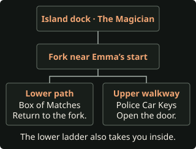

Before you start
- Completed story. Choose Chapter 4 in Chapter Select. This guide assumes Jacob, Emma, and the rest of the group enter that chapter alive. If Jacob already drowned, continue without the second bushes shot. Finish each replay to restore Chapter Select.
- New game. Use the prologue through Chapter 3 of Rough Night, then switch to this page. In Chapter 1, choose Break In and Keep the stuffed rabbit inside if you want the shortest Kaitlyn-only replay. When Abi returns with her bag, use Nudge? and continue with Friendly → Supportive → Understanding.
- Input settings. Set Aim Assist to Off and use manual quick-time events, mashes, breathing, and timed interrupts. Decline Death Rewind if it appears. Pass inputs unless a step asks you to fail or wait. Settings to check
Check Paths → Down the Rabbit Hole for Abi putting the toy in her bag. If you followed Rough Night with Leave Bags, you can still do the massacre from Chapter 4. Use the Chapter 9 Kaitlyn replay afterward.
Massacre checks the nine playable counselors. For the separate newspaper goal that also involves the Hacketts, see No Soul Left Alive.
Find a pickup on this route
This list starts in Chapter 4. Use Rough Night for earlier pickups. Read the setup inside each step before you pass its chapter. Full collectible checklist
Chapter 4
Don’t Panic

Ryan · Shoot Jacob or keep him alive for pickups
- At the firepit, take Apply Pressure?, pass the mash and choose Dismissive. Take Call Out? when the bushes move.
- Let the first aiming timer expire. Ryan raises the gun again after the second rustle. Aim at the movement in the bushes and fire in this second window. You have six seconds with standard timing.
- If Jacob comes out of the bushes, the shot missed. If he was hit, Ryan gets a choice about leaving a note. Choose Dismissive and watch for Bobby finding Jacob’s body. For Justice or the Memory Card, deliberately hold fire both times and use the Chapter 6 death instead. Second shot outcomes
Emma · Open the treehouse trapdoor
Optional tarot · The Magician
At the start of Emma’s section, turn around and walk to the tip of the dock. Take the card at the camera change before going inland. Pickup video
Optional clues · Box of Matches and Police Car Keys

- Box of Matches. At the fork by the stairs, take the lower path to the fire ring. Pick up the matches and leave the ladder alone so you can still get the keys. Journal and video
- Police Car Keys. Backtrack and take the stairs up to the treehouse. Inspect the window to the left of the door before entering. Journal and video
- From the dock, head inland and take the stairs up to the treehouse. Choose Compassionate at the vlog.
- Open the door, then choose Open Trapdoor as soon as the game asks whether to search the bag. Max kills Emma. To take her photo first, use the alternate death below.
Optional evidence · Attack Photo
- Inside the treehouse, choose Search Bag → Use Taser. Take Take Photo? as soon as it appears. Pickup video
- Press Down, pass the first zipline mash, choose Spray and press Up, Up along the walkway. On the second visit inside, choose Use Trapdoor, press Down at the cabinet and pass the ladder mash.
- After Dylan’s lodge scene, Emma reaches the zipline crank. Choose Reel Quickly → Jump and let the final Up expire. Emma falls to her death and the evidence stays in the journal. Chase and zipline outcomes
Dylan · Call from the lodge
Optional tarot · Strength
Take the card in the doorway cutscene while the group carries Nick inside. You have a base window of 3.5 seconds. Pickup video
- Choose Optimistic → Hopeful → Determined → Suspicious → Calm → Defensive → Give Gun. Choose Move On if Eliza offers a reading.
Chapter 5
White Noise

Kaitlyn and Nick · Leave the lodge
- As Nick choose Grateful if Abi helped him in the woods. Compassionate is available either way. Let Speak Up? expire, then choose Reassuring.
- As Kaitlyn, press Right at the flashlight and Left at the banister. Pass Don’t Breathe and press Down at the stairs. For the Ticket Stub, use the table encounter below instead.
- Back as Nick, choose Confident → Intrigued → Hide and pass Don’t Breathe. If Abi kept the rabbit in Chapter 1, the toy stays available in the lodge kitchen.
Optional setup · Knock down the Ticket Stub frame
Press Right at the flashlight, then miss Left at the banister. Press Left when Bobby throws the vial. He lifts the table and knocks down the frame. Hit the table, or hold fire and press Up when he grabs Kaitlyn. Pick up the Ticket Stub in Chapter 10. Other table outcomes
Dylan and Ryan · Radio hut
- Cross the bridge and walk through the cabins toward the radio tower. Collect anything you want before talking to Ryan on the steps.
Optional tarot · The Devil
In the cabin clearing, walk between the swing and picnic tables. Take the card at the camera change. Pickup video
Optional clues · Triggered Bear Trap and Letter to Camp Nurse
- Triggered Bear Trap. Inspect the ground by the fence at the far left of the cabin clearing. Journal and video
- Letter to Camp Nurse. Check the paper on the ground outside Room 03. Journal and video
Optional evidence · Claw Marks
Inspect the wall by the fan left of the hut door. Pickup video
Optional tarot · The Hermit
Round the corner past the claw marks and walk to the base of the tower. Pickup video
- Talk to Ryan and choose Confident. In the hut choose Interested → Concerned → Apologetic, then hold fire at the ceiling.
- Choose Aggressive → Confident → Calm as they set up the feedback loop.
- If Abi broke in, Silas bites Dylan. Choose Desperate → Chainsaw and pass the mash to remove the hand and stop the infection. If Abi left the cabin locked, Ryan goes outside instead. Hold fire again, then press Left → Down when Silas lunges. Dylan stays unbitten.
- Choose Reassuring when Kaitlyn asks if it’s safe. Choose Move On if Eliza offers a reading.
Dylan needs to be uninfected for his planned death. If you left the bite untreated, replay Chapter 5 and use the chainsaw. Radio-hut branches
Chapter 6
Prayers by Night

Jacob · Pickups before the walkway death
Skip this scene if Jacob is already dead. If you spared him in the bushes and Emma died on the island, Jacob explores alone. Get both pickups before taking the right-hand trail.
Optional evidence · Memory Card
Climb the wooden stairs and keep right at the fork. Inspect the camera lying on the walkway. Pickup video
Optional tarot · Justice
At the end of the walkway, take the left path first and approach the camera trigger. The right path starts the attack. Pickup video
Take the right-hand trail when ready. Let the Down dodge expire so Jacob hangs from the walkway, then fail the mash to pull himself up. He dies, even if Bobby marked him with blood. Walkway death and other outcomes
Kaitlyn and Abi · Let Nick kill Abi
- As Kaitlyn, choose Compassionate, take Intervene, then choose Help Nick at the pool.
- As Abi, explore the pool house. Take The Moon before completing both clues and checking Nick, which together end the exploration.
Optional tarot · The Moon
Enter the third changing stall on the left and approach its back wall. Take the card before finishing the clue interactions and checking Nick. Pickup video
Optional clues · Campers Photo and Spooky Drawing
- Campers Photo. Inspect the board in the corner of the main room. Journal and video
- Spooky Drawing. Check the locker at the far end of the changing-room corridor. Journal and video
- Check Nick and choose Calm → Compassionate. When Abi picks up the shotgun, let the aiming timer expire. Nick transforms and kills her, unlocking Lovers’ Quarrel.
- As Ryan, choose Hopeful → Suspicious → Interested at the pool house. Let Laura tell her story. Choose Move On if Eliza offers a reading.
Optional clue · Kid’s Letter Home (Emma replay)
Use the Emma-only replay to reach the firepit with Emma alive. Turn right and pick up Kid’s Letter Home from the ground by the yellow tent before going uphill. Journal and video
Chapter 7
The Past Behind Us

Laura · Travis’s interrogation
- Let Call Out? expire. Choose Compliant → Compliant → Intrigued → Pleading, then let Lash Out expire.
- Choose Concerned → Disappointed → Compliant → Worried as Laura and Max talk and Travis returns.
Optional tarot · The World
During Laura’s first cell exploration, approach the bed and walk back toward the bars. Use Interact when the camera reveals the card under the bed. Pickup video
Optional clue · Scrawled Limerick
Read the Scrawled Limerick on the wall opposite the loose brick. You can return to the cell during the next exploration if you miss it. Journal and video
- Inspect the brick by the bed, then inspect the bed to use the spoon and advance the scene.
- Choose Fearful → Serious → Reflective → Encouraging → Empathetic. At the pool house choose Calm, then back in the flashback choose Curious → Optimistic → Skeptical.
- Let Call for Help? expire when Laura is cuffed. Choose Compassionate at Max’s cell. His transformation injures her eye, then the station opens for exploration.
Laura · Explore the station, then use the gun
Optional tarot · The Chariot
Walk between the tables in the main room. Step away and return if the camera prompt expires. Pickup video
Optional evidence · Cease & Desist Letter
Climb the short steps at the lobby corner and inspect the paper across from the wooden door. Pickup video
Optional clues · Charred Sheriff’s Badge and the podcast
- Charred Sheriff’s Badge. Go upstairs, enter the second office and inspect the badge on the right. Journal and video
- Bizarre Yet Bonafide Podcast. Read the birthday card in the first upstairs office and the calendar in the third. Use the computer in the corner office downstairs. Laura works out the password and plays the podcast. Leave the syringe in the locker so Laura still uses the gun escape. Journal and video
- Leave the syringe in its locker. Return to the cell and choose Go to Sleep at the bed when ready.
- Choose Honest → Confident. Let the early Take Gun interrupt expire during the poem. Choose Confused → Encouraging → Resigned → Empathetic and press Up to listen to Travis and Chris.
- When Laura fakes an injury and Travis enters the cell, press Right to reach for the gun, then Right to dodge him. Choose Demanding → Shoot Travis. If a gun recovery prompt appears after a miss, pressing Right gets the gun back and failing it shoots him in the struggle. All gun branches
- Choose Anxious after the escape and Show Bite at the pool house. Jacob’s cage scene is skipped if he died. Choose Move On if Eliza offers a reading.
Check Paths → The White Whale for the entry that Laura shot Travis during her escape. That wound is what makes him stab Laura after Ryan kills Chris.
Chapter 8
Out For Blood

Ryan and Laura · From the pool house to the quarry
- At the pool house choose Uncertain → Curious. With Abi dead, choose Honest about the voice, then Guarded → Compassionate → Friendly as they discuss Chris.
- On the way choose Inquisitive → Reflective → Compassionate. They fall into the quarry.
- As Laura, take the clues from the quarry floor before going up the stairs and along the metal walkways.
Optional clues · Old Quarry Tools and Miner’s Lunchbox
- Old Quarry Tools. Inspect the ground at the foot of the first metal staircase. Journal and video
- Miner’s Lunchbox. Circle the pool and inspect the metal lunchbox at the far end before heading upstairs. Journal and video
Optional tarot · The Lovers
After the railing breaks, walk near the left railing of the next ledge. Take the card before going to the stairs ahead. Pickup video
- Press Right when the stairs collapse, then search at the top before crossing the next walkway.
Optional evidence · Scarred Flesh
Inspect the patch on the ground just before the next metal walkway. It’s available after either result of the stair prompt. Pickup video
- Choose Patient at the conversation past the Cave In sign, then pass the mash at the planks.
Optional tarot · Wheel of Fortune
Take the card at the camera change as you walk through the tunnel. If the timer expires, backtrack and approach the trigger again. Pickup video
- Open the basement door to finish the quarry scene. Back at camp, Kaitlyn and Dylan check the van. Choose Optimistic and Encouraging as they talk. Emma’s death means there is no van fight.
Ryan · Leave Nick in Laura’s sights
Optional tarot · The Empress
Turn left at the start of Ryan’s basement section. Walk around the distillery room to reveal the card. Pickup video
Optional clue · Rum Still
Turn left into the distillery and inspect the equipment to record Rum Still. Journal and video
Optional tarot · The Emperor
Return to the starting corridor and walk straight. Take the card before entering the red-lit passage. Pickup video
- Enter the red-lit passage and press Down at the slippery floor. With Jacob dead, the Open Cage? prompt is skipped.
- Let Stop Laura expire. Laura shoots the werewolf in the cage, killing Nick. Let the following Call Out? expire as well. Choose Move On if Eliza offers a reading.
Chapter 9
The Matriarch

Laura and Ryan · Escape through the Hackett house
- On the road, choose Positive → Curious if Dylan lost his hand, or Curious → Curious if he has both hands.
- When Constance grabs the shotgun, let the mash fail to spare her. Choose Run, then press Right to dodge. Bobby stabs Ryan on every branch.
- Let Pull Knife? expire. You have a three-minute base timer in the bedroom. Check the dresser and bed area for pickups before approaching the left door.
Optional evidence · Kaylee’s Letter
Open the small jewelry box on the dresser to the right of the fireplace. Pickup video
Optional tarot · Death
Walk across the bedroom toward the bed and take the card when the camera changes. Pickup video
- Use the left door’s keyhole, choose Block Door and pass both mashes. This keeps Ryan’s knife available for the later replay.
- As Laura choose Hide and pass Don’t Breathe in the bathtub. In the blue room, skip the piano and head upstairs.
Optional clues · Hunting Trophy Wall and Hackett Family Tree
- Hunting Trophy Wall. Inspect the display beside the stairs in the blue room. Journal and video
- Hackett Family Tree. In the upstairs office, inspect the framed chart beside the armchair. Journal and video
Optional tarot · The Sun
Go beyond the upstairs office and toward the windows. Take the card before approaching the next door. Pickup video
- Approach the upstairs door. Press Left, Left, Left and choose Run when Laura fights Jedediah.
Ryan · Bobby and the bite
- Press Left → Right at the wall gap and pass Don’t Breathe. Let Stab expire when Bobby catches up. For the massacre, Bobby can stay alive.
- As Ryan, choose Sympathetic → Accept when Laura offers the bite. Let Pull Away? expire. The bite keeps Ryan alive until the confrontation with Travis.
Dylan · Fail the blowtorch mash
- Follow the path right of the pile of cars into the garage. Use the switch on the table by the downstairs stairs to open the gate.
Optional clue · Scrapyard Note
Go upstairs in the garage and inspect the receipts at the end of the walkway for the Scrapyard Note. Journal and video
Optional tarot · Judgement
Go through the gate, climb the metal steps and cross the container roof to the camera trigger. Take the card before heading to the crane. Pickup video
Optional clue · Discarded Signage
Go down the far steps and inspect the green sign between the staircases for Discarded Signage. Journal and video
- Cross the clearing and walk through the wrecked bus. Go left toward the yellow crane stairs.
- Choose Encouraging → Warn Kaitlyn and press Up. Choose Sound Horn, then fail the first blowtorch mash. Silas kills uninfected Dylan before the lever prompt, and Kaitlyn leaves unbitten. Torch outcomes
Optional tarot · The Hierophant (Abi or Emma replay)
During the Abi-only or Emma-only replay, walk toward the shelter stairs and take the card at the camera change. Step away and return if it expires. Get the card before using the separate ladder. At Eliza’s flashback, press Left when the stake flies toward her. Pickup video
Ryan · Shoot Chris, then lose to Travis
- With Abi and Emma dead, the shelter exploration is skipped. As Laura, approach Chris in the attic to start the fight. She transforms and they fall through the floor.
- Hit Chris with Ryan’s shotgun. Chris is the werewolf in front of Ryan. Laura is farther right. The base window is 4.1 seconds. Killing Chris cures Max and unlocks his island scene. Target comparison
- Travis stabs Laura with the silver shard because she shot him in Chapter 7. Choose Aggressive as Ryan and fail the Down dodge when Travis lunges. Travis kills Ryan.
- Choose Move On if Eliza offers a reading. Max and Kaitlyn should be the only living counselors when Chapter 10 starts.
Chapter 10
The Final Girl

Max · Swim to the mainland
- Follow the path from the treehouse to the dock. If Max killed Emma in the treehouse, passing her body triggers the phone scene. That scene is skipped if she fell from the zipline. At the dock choose Swim to Shore. Caleb kills Max as he climbs out.
Kaitlyn · Let Caleb catch her
- Go upstairs at the lodge. The portrait is on the chimney wall. Choose Keep Looking if you want to finish exploring first.
Optional clues · Five lodge clues before the attack
- Camp Letter. Turn left from the first stairs into the bunk room and inspect the note on the floor. Journal and video
- Ancestral Portrait. Inspect the portrait on the chimney wall midway along the landing and choose Keep Looking. Journal and video
- Ticket Stub. Inspect the fallen frame on the floor by the portrait. If it’s still on the wall, use the Chapter 5 setup in a replay. Journal and video
- Chalkboard Doodle. Go past the portrait into the classroom and inspect the board. Journal and video
- Inscribed Jewelry. Leave the classroom, turn left up the stairs and inspect the couch. Journal and video
Optional tarot · The High Priestess
Take the stairs by the bunk room and walk toward the top-floor windows. Take the card at the camera change. Pickup video
Optional evidence · Trail Cam Footage
Inspect the boxes beside the couch on the upper floor before starting the attack. Pickup video
- At the portrait, choose Prepare for Attack. When Caleb approaches, choose Wait and let the aiming timer expire. Alone and unbitten, Kaitlyn dies. Opening shot outcomes
- Continue into the epilogue. The game checks Hackett’s Quarry Massacre before the fate cards. Finish the branch before starting either replay below. Award timing
Sole survivor · Kaitlyn
The Final Girl
Use a completed massacre save. Kaitlyn needs to be the only counselor alive at the start of the epilogue. Choose the replay that matches your Chapter 1 toy choice.
With the rabbit · Start in Chapter 10
- Select Chapter 10. Confirm the massacre setup left only Max and uninfected Kaitlyn alive, and that Abi put the toy in her bag in Chapter 1.
- As Max, walk to the dock and choose Swim to Shore.
- At the lodge, go upstairs and choose Prepare for Attack at the portrait. Choose Run → Beam. Pass the beam mash. If you miss it, press Up to recover.
- Choose Run again to head downstairs. With Abi and Emma dead, there is no silver handoff. Kaitlyn goes to the kitchen.
- Pass Don’t Breathe. Choose Freezer → Use Decoy and win the door mash. Kaitlyn stays outside and locks Caleb inside. Finish the epilogue. Recorded Final Girl replay
Without the rabbit · Start in Chapter 9
- Select Chapter 9 from the completed massacre. Dylan needs to enter the chapter alive and uninfected. Follow the same house steps, including accepting Laura’s bite.
- At the crane, choose Encouraging → Lift Car → Slam Car. Fail the lever mash to let Silas bite Kaitlyn. Watch for the ankle bite. Dylan stays unbitten and goes with her to the lodge.
- In the attic, shoot Chris. After Travis stabs Laura, choose Aggressive and fail Down so Ryan dies. In Chapter 10 choose Swim to Shore as Max.
- At the lodge portrait, choose Prepare for Attack. Choose Wait and let the opening shot expire. Caleb kills uninfected Dylan, and Kaitlyn gets away to the attic.
- Choose Beam. Fail the balance mash, then let the Up recovery expire. The bite lets Kaitlyn survive the fall. Finish the epilogue with her as the only surviving counselor. Infected beam survival recap
Check the bite before attempting the beam failure. If Kaitlyn stayed unbitten and the toy is missing, the Chapter 10 snapshot can’t supply either setup. Return to the Chapter 9 replay when Chapter Select is available again.
No-rabbit replay traced through the PC crane, lodge opening shot, attic beam and epilogue checks. Recorded lodge attack on Dylan · Kaitlyn’s bite
Sole survivor · Ryan
Last Man Standing
After the massacre or the Kaitlyn replay, select Chapter 9. Laura must have shot Travis in Chapter 7. Dylan must be alive and uninfected when Chapter 9 starts. Earlier deaths carry over.
Chapter 9 · Keep Ryan’s knife and kill Bobby
- Use the house steps through Jedediah. Leave the knife in, check the left door’s keyhole, choose Block Door and pass both mashes. Run from Jedediah after the three Left prompts.
- At the wall gap, press Left → Right and pass Don’t Breathe. This time take Stab when Bobby catches Ryan. If Stab is missing, Bobby already took the knife. How to keep the knife
- Choose Sympathetic → Accept and let Pull Away? expire. Ryan needs the bite to survive the knife wound.
- At the crane, choose Warn Kaitlyn, press Up, choose Sound Horn and fail the first torch mash. Dylan dies. Do this again even if your previous ending was the no-rabbit Kaitlyn replay.
Chapter 9 · Win against Travis
- Approach Chris in the attic. Chris kills the wounded Bobby. When Ryan gets the gun, shoot Chris, the werewolf in front of him.
- Travis kills Laura. Choose Aggressive, then press Down when Travis lunges. Hit Travis within the 2.9-second base aiming window. With Bobby dead and Ryan bitten, Ryan survives. Attic struggle and failure outcomes
Chapter 10 · Leave Ryan as the only survivor
- As Max choose Swim to Shore.
- As Kaitlyn, choose Prepare for Attack → Wait and let the shot expire. She should be alone and unbitten.
- Continue into the epilogue for the award. Recorded Last Man Standing unlock at 7:33:11
If the completed save already has the hunt and Ryan’s vial, use the Chapter 10 vial replay.
Other sole survivors
Open the sole survivor walkthroughs for exact choices, save checks and optional pickups. Start from this completed massacre unless the replay calls for an earlier chapter.
- Abigail · Chapter 6
- Dylan · Chapter 5 or 1
- Emma · Chapter 4
- Jacob · Chapter 4
- Laura · Chapter 7 or 3
- Max · Chapter 10
- Nick · Chapter 8
Audit · Steam PC build 11105655, Chapter 4 targeting, Emma’s zipline, Jacob’s solo walkway, the fallen frame flag, the jail wound, attic and lodge transitions and ending achievement checks. PowerPyx · recorded massacre and replay setup · Recorded island and walkway deaths · Recorded collectible locations · Full audit notes